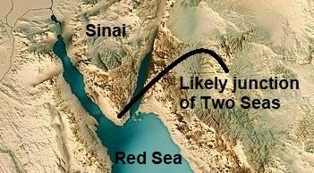

Say, "The truth is from your Lord;" then who-so-ever wills let him believe, and who-so-ever wills let him disbelieve, for the wrongdoers We have prepared a Fire whose walls will be surrounding them. If they implore relief, they will be granted water like melted brass that will scald their faces. How dreadful the drink! How uncomfortable a couch to recline on! As to those who believe and work righteousness; verily We shall not suffer to perish the reward of any who do a righteous deed. For them will be Jannaat of Eternity; beneath them rivers will flow. They will be adorned therein with bracelets of gold, and they will wear green garments of fine silk and heavy brocade. They will recline therein on raised thrones. How good the recompense! How beautiful a couch to recline on!
বল, সত্য তোমাদের পালনকর্তার পক্ষ থেকে। অতঃপর যার ইচ্ছা সে ঈমান আনুক এবং যার ইচ্ছা অবিশ্বাস করুক, যালিমদের জন্য আমি এমন আগুন প্রস্তুত করে রেখেছি যার দেয়াল তাদের ঘিরে থাকবে। যদি তারা ত্রাণ প্রার্থনা করে, তবে তাদের গলিত পিতলের মতো জল দেওয়া হবে যা তাদের মুখমন্ডলকে চুলকায়। কত ভয়ংকর পানীয়! হেলান দিয়ে বসতে কতটা অস্বস্তিকর! যারা ঈমান আনে ও সৎকর্ম করে; যে সৎকর্ম করে তার প্রতিদান আমরা নষ্ট করব না। তাদের জন্য হবে অনন্তকালের জান্নাত; তাদের তলদেশে নদী প্রবাহিত হবে। তারা সেখানে স্বর্ণের ব্রেসলেটে অলঙ্কৃত হবে এবং তারা পরিধান করবে সূক্ষ্ম রেশমের সবুজ পোশাক এবং ভারী ব্রোকেড। তারা সেখানে হেলান দিয়ে বসবে উঁচু সিংহাসনে। কত ভালো প্রতিদান! হেলান দেওয়া পালঙ্ক কত সুন্দর!
Set forth to them the parable of two men: For one of them We provided two gardens of grape-vines and surrounded them with date palms. In between the two, We placed corn- fields. Each of those gardens brought forth its produce and failed not in the least therein. In the midst of them, We caused a river to flow. And he had property. And he said to his companion in the course of a mutual talk, "I am more than you in wealth and stronger in respect of men." He went into his garden in a state unjust to his soul; he said, "I deem not that this will ever perish, nor do I deem that the Hour will come; even if I am brought back to my Lord, I shall surely find something better in exchange." His companion said to him in the course of the argument with him, "Do you deny Him Who created you out of dust, then out of a minute drop, then fashioned you into a man? But as for my part that He is God my Lord, and none shall I associate with my Lord. Why did you not, as you went into your garden, say: ―God's will! There is no power but with God!‖ If you do see me less than you in wealth and sons, it may be that my Lord will give me something better than your garden, and that He will send on your garden thunderbolts from sky making it slippery sand! Or the water of the garden will run off underground so that you will never be able to find it." So, his fruits were encompassed, and he remained twisting and turning his hands; over what he had spent on his property, which had tumbled to pieces to its very foundations, and he could only say, "Woe is me! Would I had never ascribed partners to my Lord and Cherisher!" Nor had he numbers to help him against God, nor was he able to deliver himself. There, the protection comes from Allah, the True One. He is the best to reward and the best to give success.
তাদের কাছে দুই ব্যক্তির দৃষ্টান্ত বর্ণনা করুন: তাদের একজনের জন্য আমি আঙ্গুরের দুটি বাগান দিয়েছিলাম এবং তাদের চারপাশে খেজুর গাছ দিয়েছিলাম। উভয়ের মাঝখানে আমরা ভুট্টা ক্ষেত রাখতাম। সেসব বাগানের প্রত্যেকটিই তার উৎপাদিত ফল এনেছিল এবং তাতে বিফল হয়নি। তাদের মাঝে আমি একটি নদী প্রবাহিত করেছি। এবং তার সম্পত্তি ছিল। এবং পারস্পরিক আলাপচারিতায় তিনি তার সঙ্গীকে বললেন, আমি সম্পদে তোমার চেয়ে বেশি এবং পুরুষদের দিক থেকেও শক্তিশালী। সে তার আত্মার প্রতি অন্যায় অবস্থায় তার বাগানে গেল; তিনি বললেন, "আমি মনে করি না যে এটি কখনই ধ্বংস হবে এবং আমি মনে করি না যে কেয়ামত আসবে; এমনকি যদি আমাকে আমার রবের কাছে ফিরিয়ে দেওয়া হয়, তবে আমি অবশ্যই এর বিনিময়ে উত্তম কিছু পাব।" তার সাথে তর্কের সময় তার সঙ্গী তাকে বলল, "তুমি কি তাকে অস্বীকার কর, যিনি তোমাকে ধূলিকণা থেকে সৃষ্টি করেছেন, তারপর এক মিনিটের বিন্দু থেকে, তারপরে তোমাকে একজন মানুষে রূপ দিয়েছেন? কিন্তু আমার অংশ হিসাবে তিনি হলেন ঈশ্বর আমার প্রভু, এবং আমি আমার প্রভুর সাথে কাউকে শরীক করব না। আপনি কেন করলেন না, যখন আপনি আপনার বাগানে গেলেন, বলুন: "আল্লাহর ক্ষমতা যদি আমার থেকে কম থাকে তবে ঈশ্বরের ইচ্ছা নেই! তুমি ধন-সম্পদ ও সন্তান-সন্ততিতে, হয়তো আমার রব আমাকে তোমার বাগানের চেয়েও উত্তম কিছু দেবেন এবং তোমার বাগানের উপর আকাশ থেকে বজ্রপাত করে তা পিচ্ছিল বালির মতো বয়ে যাবে অথবা বাগানের পানি ভূগর্ভে প্রবাহিত হবে যাতে তুমি তা খুঁজে পাবে না।" সুতরাং, তার ফলগুলিকে ঘিরে রাখা হয়েছিল, এবং সে তার হাত পাকিয়ে ঘুরছিল; তিনি তার সম্পত্তির জন্য যা ব্যয় করেছিলেন, যার ভিত্তিগুলি ভেঙে টুকরো টুকরো হয়ে গিয়েছিল, এবং তিনি কেবল বলতে পেরেছিলেন, "হায় আমার! আমি কি কখনও আমার প্রভু ও পালনকর্তার অংশীদার করতাম না!" ঈশ্বরের বিরুদ্ধে তাকে সাহায্য করার জন্য তার সংখ্যাও ছিল না এবং সে নিজেকে উদ্ধার করতেও সক্ষম ছিল না। সেখানে, সুরক্ষা আসে আল্লাহর কাছ থেকে, যিনি সত্য। তিনি পুরষ্কার প্রদানের জন্য সর্বোত্তম এবং সাফল্য প্রদানের জন্য সর্বোত্তম।
Set forth to them the similitude of the life of this world—it is like the rain, which we send down from the skies; the earth's vegetation absorbs it, but soon it becomes dry stubble, which the winds do scatter. It is God who prevails over all things. Wealth and sons are allurements of the life of this world. But the things that endure, good deeds, are best in the sight of your Lord as rewards, and best as hopes. One Day We shall remove the mountains and you will see the land as a level stretch, and We shall gather them all together, nor shall We leave out any one of them. And they will be marshaled before your Lord in ranks—now have you come to Us, as We created you first, nay, but you thought We shall not fulfill the appointment made to you to meet! And the Book will be placed, and you will see the sinful in great terror because of what is therein. They will say, "Ah! Woe to us! What a Book is this! It leaves out nothing small or great but takes account thereof!" They will find all that they did placed before them. And not one will your Lord treat with injustice. Remarks:
তাদের কাছে পার্থিব জীবনের দৃষ্টান্ত বর্ণনা করুন- এটা বৃষ্টির মতো, যা আমরা আকাশ থেকে বর্ষণ করি। পৃথিবীর গাছপালা এটি শোষণ করে, কিন্তু শীঘ্রই এটি শুকনো খড় হয়ে যায়, যা বাতাস ছড়িয়ে দেয়। এটা ঈশ্বর যিনি সব কিছুর উপর বিজয়ী. ধন-সম্পদ ও পুত্র-সন্তান পার্থিব জীবনের মোহ। কিন্তু যে জিনিসগুলো সহ্য করে, ভালো কাজগুলো, আপনার পালনকর্তার কাছে পুরস্কার হিসেবে সবচেয়ে ভালো এবং আশার দিক থেকেও উত্তম। একদিন আমরা পর্বতমালাকে সরিয়ে দেব এবং আপনি ভূমিকে সমতল প্রসারিত দেখতে পাবেন এবং আমরা তাদের সবাইকে একত্র করব এবং তাদের একটিকেও ছাড়ব না। এবং তারা আপনার পালনকর্তার সামনে সারিবদ্ধভাবে মার্শাল করা হবে - এখন আপনি আমাদের কাছে এসেছেন, যেমন আমরা আপনাকে প্রথম সৃষ্টি করেছি, বরং আপনি ভেবেছিলেন যে আমরা আপনার সাথে দেখা করার জন্য যে নিয়োগ করেছি তা পূরণ করব না! এবং কিতাব স্থাপন করা হবে এবং এতে যা আছে তার কারণে আপনি পাপীকে প্রচন্ড আতঙ্কে দেখতে পাবেন। তারা বলবে, হায়! আফসোস! এটা কি কিতাব! এটা ছোট বা বড় কিছুই বাদ দেয় না কিন্তু তার হিসাব নেয়! তারা যা করেছে তা তাদের সামনে রাখা হবে। আর তোমার প্রতিপালক কারো সাথে অবিচার করবেন না। মন্তব্য:
In the verses above, the Lawh-Mahfuz (Protected Disc) is referred to as the Book. The Lawh-Mahfuz is linked to the Pen and the Mother of the Book (Mother Board). Together, they form a system I call the 'Central Computer of the Universes,' or 'CCU' for short. It is in the Arsh, located beyond the universes. This is discussed in detail in Section-9 of Chapter-6. The universe will collapse by rolling the Skies. The Final Judgment will take place on a specially created object (Land of Judgment) in the Super Space. This Land of Judgment will be connected to the CCU with the necessary arrangements to assist in the Judgment as required. The memory-data of a human‘s brain is collected every night and preserved in the Lawh-Mahfuz. The following verse indicates this:
উপরের আয়াতগুলোতে লহ-মাহফুজ (সুরক্ষিত চাকতি) কে কিতাব বলা হয়েছে। লওহ-মাহফুজ কলম এবং বইয়ের মা (মাদার বোর্ড) এর সাথে যুক্ত। একসাথে, তারা একটি সিস্টেম তৈরি করে যাকে আমি বলি 'মহাবিশ্বের কেন্দ্রীয় কম্পিউটার' বা সংক্ষেপে 'সিসিইউ'। এটি মহাবিশ্বের বাইরে অবস্থিত আরশে অবস্থিত। এটি অধ্যায়-6-এর ধারা-9-এ বিশদভাবে আলোচনা করা হয়েছে। আকাশ গড়িয়ে মহাবিশ্ব ভেঙে পড়বে। চূড়ান্ত বিচার হবে সুপার স্পেসে বিশেষভাবে তৈরি করা বস্তুর (ল্যান্ড অফ জাজমেন্ট) উপর। এই ল্যান্ড অফ জাজমেন্টটি প্রয়োজন অনুসারে বিচারে সহায়তা করার জন্য প্রয়োজনীয় ব্যবস্থা সহ CCU-এর সাথে সংযুক্ত করা হবে। প্রতি রাতে মানুষের মস্তিষ্কের স্মৃতি-উপাত্ত সংগ্রহ করা হয় এবং লহ-মাহফুজে সংরক্ষিত হয়। নিম্নলিখিত আয়াতটি ইঙ্গিত করে:
―It is He who makes you die by night and has knowledge of all that you have done by day. By day, does He raise you up again that a term appointed be fulfilled. In the end, unto Him will be your return; then He will show you the truth of all that you did.‖ [Al Quran 6:60]
-তিনিই তোমাদিগকে রাত্রিকালে মৃত্যু ঘটান এবং দিনে যা কিছু করেছ সে সম্পর্কে তিনিই জানেন। দিনের বেলায়, তিনি কি তোমাদেরকে পুনরুত্থিত করবেন যাতে একটি নির্ধারিত মেয়াদ পূর্ণ হয়। শেষ পর্যন্ত, তাঁর কাছেই তোমাদের প্রত্যাবর্তন হবে; অতঃপর তিনি তোমাদের সকলের সত্যতা দেখাবেন যা তোমরা করেছ।'' [আল কুরআন 6:60]
The data from the brain will primarily be used to return the memory of a resurrected human. However, in some cases, the data will be used as the evidences of Judgment, as the verses under discussion say: ―And the Book will be placed, and you will see the sinful in great terror because of what is therein...‖ The memory data would encompass everything a person saw, heard, thought, felt, and did throughout a day. Therefore, no one will be able to deny the sins they have committed. On the Land of Judgment, there may be booths connected to the CCU where a person‘s actions will be displayed on demand during the Judgment, as mentioned in the verses: ―…They will say, "Ah! Woe to us! What a Book is this! It leaves out nothing small or great but takes account thereof!" They will find all that they did placed before them. And not one will your Lord treat with injustice.‖
মস্তিষ্কের ডেটা প্রাথমিকভাবে পুনরুত্থিত মানুষের স্মৃতি ফিরিয়ে দিতে ব্যবহার করা হবে। যাইহোক, কিছু ক্ষেত্রে, তথ্যগুলি বিচারের প্রমাণ হিসাবে ব্যবহার করা হবে, যেমন আলোচ্য আয়াতগুলি বলে: "এবং বইটি স্থাপন করা হবে, এবং এতে যা আছে তার কারণে আপনি পাপীকে প্রচণ্ড আতঙ্কের মধ্যে দেখতে পাবেন..." স্মৃতির তথ্যটি একজন ব্যক্তি যা দেখেছে, শুনেছে, চিন্তা করেছে, অনুভব করেছে এবং সারাদিন যা করেছে তা অন্তর্ভুক্ত করবে। অতএব, তারা যে পাপ করেছে তা কেউ অস্বীকার করতে পারবে না। বিচারের ভূমিতে, সিসিইউ-এর সাথে সংযুক্ত বুথ থাকতে পারে যেখানে বিচারের সময় একজন ব্যক্তির ক্রিয়াকলাপ চাহিদা অনুযায়ী প্রদর্শিত হবে, যেমন আয়াতে উল্লিখিত হয়েছে: ―…তারা বলবে, "আহ! আফসোস! এটা কি বই! এটি ছোট বা বড় কিছুই বাদ দেয় না কিন্তু তার হিসাব নেয়!" তারা যা করেছে তা তাদের সামনে রাখা হবে। আর তোমার রব কারো সাথে অন্যায় আচরণ করবেন না।"
Behold! We said to the angels, "Bow down to Adam". They bowed down, except Iblis. He was one of the Jinns, and he broke the Command of his Lord. Will you then take him and his progeny as protectors rather than Me? And they are enemies to you! Evil would be the exchange for the wrongdoers! I made them not to witness the creation of the Skies and Lands, not their own creation, nor is it for Me to take as helpers such as lead astray! One Day He will say, "Call on those whom you thought to be My partners." And they will call on them, but they will not listen to them. And We shall set a crucible (mawbiqan) between them, and the sinful shall see the fire and apprehend that they are to fall in it—no means will they find to turn away from there.
দেখো! আমরা ফেরেশতাদের বললাম, আদমকে সেজদা কর। তারা সিজদা করল, ইবলিস ছাড়া। সে জিনদের একজন ছিল এবং সে তার পালনকর্তার আদেশ ভঙ্গ করেছিল। তাহলে কি তুমি তাকে ও তার বংশধরদেরকে আমার পরিবর্তে অভিভাবক হিসেবে গ্রহণ করবে? এবং তারা আপনার শত্রু! অন্যায়ের বিনিময়ে হবে মন্দ! আমি তাদেরকে আকাশ ও ভূমি সৃষ্টির সাক্ষী করিনি, তাদের নিজস্ব সৃষ্টি নয়, এবং বিপথগামীদের মত সাহায্যকারী হিসাবে গ্রহণ করা আমার জন্য নয়! একদিন তিনি বলবেন, যাদেরকে তোমরা আমার শরীক মনে করেছিলে তাদেরকে ডাক। এবং তারা তাদের ডাকবে, কিন্তু তারা তাদের কথা শুনবে না। এবং আমি তাদের মধ্যে একটি ক্রুসিবল (মাওবিকান) স্থাপন করব এবং পাপীরা আগুন দেখতে পাবে এবং তারা বুঝতে পারবে যে তারা তাতে পড়ে যাবে - তারা সেখান থেকে ফিরে যাওয়ার কোন উপায় পাবে না।
The universe will collapse. The Final Judgment will be held on a specially created object in the Super Space. After the Judgment, a part of mankind will be transferred to another universe called Jannaat. The sinners will be moved back into the collapsed universe. As the universe will be opened, the sinners will be scattered across the reviving galaxies. The galaxies are the objects of hell. A sinner will own a whole galaxy as a forgotten vicegerent of God. A galaxy and its corresponding anti-galaxy are connected through the black holes, with the accretion discs serving as barriers. In the paragraph above, 'Crucible' (Mawbiqan) refers to the 'accretion disc'. A black hole draws in matter from the surrounding space. As this matter falls inward, the black hole rotates at tremendous speed, winding its powerful magnetic field. Due to the rotating magnetic field, matter cannot fall into the black hole directly; instead, it swirls around it at extreme speeds. This forms the crucible, or accretion disc, where intense heat is generated due to friction.
মহাবিশ্ব ভেঙে পড়বে। চূড়ান্ত বিচার হবে সুপার স্পেসে বিশেষভাবে তৈরি করা বস্তুর ওপর। বিচারের পরে, মানবজাতির একটি অংশ জান্নাত নামক অন্য মহাবিশ্বে স্থানান্তরিত হবে। পাপীদের আবার ধসে পড়া মহাবিশ্বে নিয়ে যাওয়া হবে। মহাবিশ্ব উন্মুক্ত হওয়ার সাথে সাথে পাপীরা পুনরুজ্জীবিত ছায়াপথ জুড়ে ছড়িয়ে পড়বে। ছায়াপথগুলো নরকের বস্তু। একজন পাপী ঈশ্বরের ভুলে যাওয়া ভাইসার্জেন্ট হিসাবে পুরো গ্যালাক্সির মালিক হবে। একটি গ্যালাক্সি এবং এর সংশ্লিষ্ট অ্যান্টি-গ্যালাক্সি ব্ল্যাক হোলের মাধ্যমে সংযুক্ত থাকে, অ্যাক্রিশন ডিস্কগুলি বাধা হিসাবে কাজ করে। উপরের অনুচ্ছেদে 'ক্রুসিবল' (মাউবিকান) 'অ্যাক্রিশন ডিস্ক'-কে বোঝায়। একটি ব্ল্যাক হোল আশেপাশের স্থান থেকে পদার্থকে আঁকে। এই বিষয়টি ভিতরের দিকে পড়ে যাওয়ার সাথে সাথে ব্ল্যাক হোলটি তার শক্তিশালী চৌম্বক ক্ষেত্রকে ঘুরিয়ে প্রচণ্ড গতিতে ঘোরে। ঘূর্ণায়মান চৌম্বক ক্ষেত্রের কারণে, পদার্থ সরাসরি ব্ল্যাকহোলে পড়তে পারে না; পরিবর্তে, এটি চরম গতিতে এটির চারপাশে ঘূর্ণায়মান। এটি ক্রুসিবল বা অ্যাক্রিশন ডিস্ক গঠন করে, যেখানে ঘর্ষণের কারণে তীব্র তাপ উৎপন্ন হয়।
FIGURE 18.2: Crucible / Accretion Disc
চিত্র 18_2 / Figure 18_2
চিত্র 18.2: ক্রুসিবল / অ্যাক্রিশন ডিস্ক
চিত্র 18_2 / Figure 18_2
A sinner will reside in an object close to a black hole, where the intense heat will affect him profoundly. He will witness the fire of the crucible and fear that his dwelling might fall into it, as suggested by the verses in the paragraph above: ―And We shall set a crucible between them; and the sinful shall see the fire and apprehend that they have to fall therein—no means will they find to turn away from there.‖ A sinner will be told to call upon the jinns residing in his galaxy, but they will not respond, as they will be in a different dimension beyond the black hole, with the crucible forming a difficult barrier to cross. However, according to the Quran, a time will come when the jinns will become his close companions.
একজন পাপী একটি ব্ল্যাকহোলের কাছাকাছি একটি বস্তুতে বাস করবে, যেখানে তীব্র তাপ তাকে গভীরভাবে প্রভাবিত করবে। তিনি ক্রুসিবলের আগুন প্রত্যক্ষ করবেন এবং ভয় পাবেন যে তার বাসস্থান এতে পড়ে যেতে পারে, যেমনটি উপরের অনুচ্ছেদের আয়াত দ্বারা পরামর্শ দেওয়া হয়েছে: - এবং আমরা তাদের মধ্যে একটি ক্রুসিবল স্থাপন করব; এবং পাপীরা আগুন দেখতে পাবে এবং বুঝতে পারবে যে তাদের সেখানে পড়তে হবে - তারা সেখান থেকে মুখ ফিরিয়ে নেওয়ার কোন উপায় খুঁজে পাবে না।' একজন পাপীকে তার ছায়াপথে বসবাসকারী জ্বীনদের ডাকতে বলা হবে, কিন্তু তারা সাড়া দেবে না, কারণ তারা কৃষ্ণগহ্বরের বাইরে ভিন্ন মাত্রায় থাকবে, ক্রুসিবল থেকে একটি কঠিন বাধা তৈরি করবে। যাইহোক, কুরআন অনুসারে, এমন একটি সময় আসবে যখন জিনরা তার ঘনিষ্ঠ সঙ্গী হয়ে উঠবে।
We have explained in detail in this Qur'an every kind of similitude for the benefit of mankind, but man is contentious in most things. And what is there to keep back men from believing now that Guidance has come to them, nor from praying for forgiveness from their Lord, but that the ways of the ancients be repeated with them, or the Wrath be brought to them face to face? We only send the apostles to give glad tidings and to give warnings, but the Unbelievers dispute with vain argument in order therewith to weaken the truth, and they treat My verses as a jest, as also the fact that they are warned! And who does more wrong than one who is reminded of the verses of his Lord but turns away from them forgetting the (deeds) which his hands have sent forth? Verily, We have set veils over their hearts lest they should understand this, and over their ears, deafness; if you call them to guidance, even then will they never accept guidance. But your Lord is Most Forgiving, Full of Mercy. If He were to call them to account for what they have earned, then surely, He would have hastened their punishment; but they have their appointed time, beyond which they will find no refuge. Such were the populations we destroyed when they committed iniquities, but we fixed an appointed time for their destruction.
আমরা এই কুরআনে মানবজাতির কল্যাণের জন্য প্রতিটি ধরণের উপমা বিশদভাবে ব্যাখ্যা করেছি, কিন্তু মানুষ বেশিরভাগ বিষয়ে বিতর্কিত। আর কি আছে মানুষকে এই বিশ্বাস করা থেকে বিরত রাখার যে, তাদের কাছে হেদায়েত এসেছে, না তাদের প্রভুর কাছে ক্ষমা প্রার্থনা করা থেকে, কিন্তু তাদের সাথে পূর্ববর্তীদের পথের পুনরাবৃত্তি ঘটানো হবে, অথবা তাদের সামনে গজব আসবে? আমরা রসূলদেরকে কেবল সুসংবাদ দিতে এবং সতর্ক করার জন্য প্রেরণ করি, কিন্তু অবিশ্বাসীরা সত্যকে দুর্বল করার জন্য নিরর্থক তর্ক-বিতর্ক করে এবং তারা আমার আয়াতকে ঠাট্টা-বিদ্রূপ বলে মনে করে এবং তাদের সতর্ক করা হয়! আর তার চেয়ে বড় জালেম আর কে হবে যাকে তার পালনকর্তার আয়াতসমূহ স্মরণ করিয়ে দেওয়া হয়, কিন্তু সে তার হাত যা পাঠিয়েছে তা ভুলে যায়? নিশ্চয়ই আমি তাদের অন্তরের উপর আবরণ রেখে দিয়েছি যাতে তারা এটা বুঝতে না পারে এবং তাদের কানের উপর বধিরতা। যদি তুমি তাদেরকে হেদায়েতের দিকে ডাক, তবুও তারা কখনো হেদায়েত গ্রহণ করবে না। কিন্তু তোমার প্রভু পরম ক্ষমাশীল, করুণাময়। যদি তিনি তাদেরকে তাদের কৃতকর্মের হিসাব দিতেন, তবে অবশ্যই তিনি তাদের শাস্তি ত্বরান্বিত করতেন। কিন্তু তাদের নির্ধারিত সময় আছে, যার বাইরে তারা কোন আশ্রয় পাবে না। এই ধরনের জনসংখ্যা আমরা ধ্বংস করেছিলাম যখন তারা অন্যায় করেছিল, কিন্তু আমরা তাদের ধ্বংসের জন্য একটি নির্দিষ্ট সময় নির্ধারণ করেছিলাম।
Behold, Moses said to his attendant: "I will not give up until I reach the junction of the two seas, or I spend years and years in travel." But when they reached the Junction, they forgot their Fish, which took its course through the sea as in a tunnel. When they had passed on, Moses said to his attendant: "Bring us our early meal; truly we have suffered much fatigue in this, our journey."
দেখ, মূসা তার পরিচারককে বলেছিলেন: "আমি হাল ছাড়ব না যতক্ষণ না আমি দুই সমুদ্রের সংযোগস্থলে না পৌঁছাই, অথবা আমি বছরের পর বছর ভ্রমণে ব্যয় করি।" কিন্তু যখন তারা জংশনে পৌঁছেছিল, তারা তাদের মাছের কথা ভুলে গিয়েছিল, যা একটি টানেলের মতো সমুদ্রের মধ্য দিয়ে চলেছিল। যখন তারা চলে গেল, তখন মূসা তার পরিচারককে বললেন, "আমাদের সকালের খাবার নিয়ে এসো; সত্যিই আমাদের এই সফরে অনেক ক্লান্তি হয়েছে।"
FIGURE 18.3: Likely Junction of Two Seas He replied: "Saw you! When we betook ourselves to the rock I did indeed forget the Fish; none but Satan made me forget to tell about it; it took its course through the sea in a marvelous way!" Moses said: "That was what we were seeking after." So, they went back on their footsteps following. So, they found one of Our servants, on whom We had bestowed Mercy from Ourselves, and We had taught him from us a knowledge (min ladunna il'man / from us a knowledge). Moses said to him: "May I follow you on the footing that you teach me something of the Right Guidance, which you have been taught?" He said: "Verily you will not be able to have patience with me! And how can you have patience about things about which your understanding is not complete?" Moses said: "You will find me, if God so will, patient; nor shall I disobey you in aught." The other said: "If then you would follow me, ask me no questions about anything until I myself speak to you concerning it." So, they both proceeded until when they were in the boat; he scuttled it. Moses said: "Have you scuttled it in order to drown those in it? Truly a strange thing you have done!" He answered: "Did I not tell you that you can have no patience with me?" Moses said: "Rebuke me not for forgetting, nor grieve me by raising difficulties in my case." Then they proceeded until when they met a boy; he slew him. Moses said: "Have you slain an innocent person who had slain none? Truly a foul thing you have done!" He answered: "Did I not tell you that you can have no patience with me?" Said: "If ever I ask you about anything after this, keep me not in your company; you have received an excuse from me." Then they proceeded until when they came to the inhabitants of a town. They asked them for food, but they refused them hospitality. They found there a wall on the point of falling down, but he set it up straight. Said: "If you had wished, surely you could have taken wages for it!" He answered: This is the parting between you and me. Now will I tell you the interpretation of (those things) over which you were unable to hold patience: As for the boat, it was of poor people working in the sea. I but wished to render it unserviceable, for there was after them a king who seized on every boat by force. As for the boy, his parents were people of Faith, and we feared that he would grieve them by obstinate rebellion and ingratitude. So, we desired that their Lord would give them in exchange better in purity and closer in affection. As for the wall, it belonged to two youth orphans in the Town. There was beneath it a buried treasure to which they were entitled. Their father had been a righteous man. So, your Lord desired that they should attain their age of full strength and get out their treasure; a mercy from your Lord— I did it not of my own accord. Such is the interpretation of (those things) over which you were unable to hold patience.

চিত্র 18_3 / Figure 18_3
চিত্র 18.3: সম্ভবত দুই সমুদ্রের সংযোগস্থল তিনি উত্তর দিলেন: "আপনাকে দেখেছি! যখন আমরা পাথরের কাছে গিয়েছিলাম তখন আমি সত্যিই মাছটিকে ভুলে গিয়েছিলাম; শয়তান ছাড়া আর কেউ আমাকে এটি সম্পর্কে বলতে ভুলে যায়নি; এটি একটি দুর্দান্ত উপায়ে সমুদ্রের মধ্য দিয়ে চলে গেছে!" মূসা (আঃ) বললেনঃ আমরা সেটাই খুঁজছিলাম। সুতরাং, তারা তাদের পদাঙ্ক অনুসরণ করে ফিরে গেল। সুতরাং, তারা আমাদের বান্দাদের মধ্যে একজনকে পেল, যাকে আমরা নিজের পক্ষ থেকে রহমত দান করেছি এবং আমরা তাকে আমাদের কাছ থেকে একটি জ্ঞান শিখিয়েছিলাম (মিন লাদুন্না ইলমান/আমাদের কাছ থেকে একটি জ্ঞান)। মূসা তাকে বললেনঃ আমি কি আপনার অনুসরণ করতে পারি যে আপনি আমাকে সঠিক হিদায়াতের কিছু শিক্ষা দেন, যা আপনাকে শেখানো হয়েছে? তিনি বললেনঃ "নিশ্চয়ই তুমি আমার সাথে ধৈর্য ধারণ করতে পারবে না! আর যে বিষয়ে তোমার বোধগম্যতা পরিপূর্ণ নয় সে বিষয়ে তুমি কিভাবে ধৈর্য ধরবে?" মূসা (আঃ) বললেনঃ আল্লাহ চাইলে তুমি আমাকে ধৈর্যশীল পাবে এবং আমি তোমার অবাধ্য হব না। অন্যজন বলল: "তাহলে আপনি যদি আমাকে অনুসরণ করেন তবে আমাকে কোন বিষয়ে প্রশ্ন করবেন না যতক্ষণ না আমি নিজে আপনার সাথে সে সম্পর্কে কথা বলি।" সুতরাং, তারা উভয়ে নৌকায় থাকা পর্যন্ত এগিয়ে চলল; তিনি এটা ছিন্নভিন্ন. মূসা (আঃ) বললেনঃ "তুমি কি তাতে ছিন্নভিন্ন করেছ যাতে যারা এতে ডুবে যায়? তিনি উত্তর দিলেন: "আমি কি তোমাকে বলিনি যে, তুমি আমার সাথে ধৈর্য ধরতে পারবে না?" মূসা (আঃ) বললেনঃ ভুলে যাওয়ার জন্য আমাকে ধমক দিও না এবং আমার ক্ষেত্রে অসুবিধা সৃষ্টি করে আমাকে দুঃখ দিও না। অতঃপর তারা এগিয়ে চলল যখন তারা একটি ছেলের সাথে দেখা করল; সে তাকে হত্যা করেছে। মূসা (আঃ) বললেনঃ তুমি কি এমন একজন নিরপরাধ ব্যক্তিকে হত্যা করেছ যে কাউকে হত্যা করেনি? সত্যিই তুমি জঘন্য কাজ করেছ! তিনি উত্তর দিলেন: "আমি কি তোমাকে বলিনি যে, তুমি আমার সাথে ধৈর্য ধরতে পারবে না?" তিনি বললেনঃ এর পর যদি আমি তোমাকে কোন বিষয়ে জিজ্ঞাসা করি, তবে আমাকে তোমার সংগে রাখবেন না, তুমি আমার কাছ থেকে অজুহাত পেয়েছ। অতঃপর তারা এগিয়ে চলল, যখন তারা একটি জনপদের অধিবাসীদের কাছে পৌঁছল। তারা তাদের কাছে খাবার চেয়েছিল, কিন্তু তারা তাদের আতিথেয়তা প্রত্যাখ্যান করেছিল। তারা সেখানে একটি প্রাচীর দেখতে পেল যে নিচে পড়ে যাবে, কিন্তু সে সেটা সোজা করে দিল। বললেনঃ তুমি ইচ্ছা করলে অবশ্যই এর জন্য পারিশ্রমিক নিতে পারতে! তিনি উত্তর দিলেনঃ এটাই তোমার ও আমার মধ্যে বিচ্ছেদ। এখন আমি তোমাদেরকে (সেসব জিনিসের) ব্যাখ্যা বলব, যেগুলোর ওপর তোমরা ধৈর্য ধরতে অক্ষম ছিলে: নৌকাটি ছিল সমুদ্রে কর্মরত দরিদ্র লোকদের। আমি কিন্তু এটিকে অকার্যকর করতে চেয়েছিলাম, কারণ তাদের পরে একজন রাজা ছিলেন যিনি জোর করে প্রতিটি নৌকা দখল করেছিলেন। ছেলেটির ক্ষেত্রে, তার পিতা-মাতা ঈমানদার ছিলেন এবং আমরা ভয় করতাম যে সে তাদের অবাধ্যতা ও অকৃতজ্ঞতার দ্বারা দুঃখিত করবে। সুতরাং, আমরা চেয়েছিলাম যে তাদের রব তাদের বিনিময়ে আরও ভাল পবিত্রতা এবং স্নেহের কাছাকাছি দেবেন। প্রাচীরের জন্য, এটি শহরের দুটি যুবক অনাথের ছিল। এর নীচে একটি সমাহিত ধন ছিল যার অধিকার তারা ছিল। তাদের পিতা একজন ধার্মিক মানুষ ছিলেন। সুতরাং, আপনার পালনকর্তা চেয়েছিলেন যে তারা তাদের পূর্ণ শক্তি অর্জন করবে এবং তাদের ভান্ডার বের করবে। তোমার প্রভুর রহমত- আমি নিজের ইচ্ছায় এটা করিনি। এটা হল সেসবের ব্যাখ্যা যার উপর তোমরা ধৈর্য ধরতে অক্ষম ছিলে।
চিত্র 18_3 / Figure 18_3
It is widely accepted that Khidr was not a Prophet. We call a person Prophet if he gets a message of God through an angel—the matter is formal. Additionally, a Prophet is sent to a community, whereas Khidr lived a solitary life. Khidr is commonly regarded as a Sufi. A Sufi possesses special knowledge, a strengthened qalb (mind), and nafs (soul). Such individuals are blessed and have a higher connection with Allah. Allah sits in a Kursi (Throne), located in the Arsh. The Arsh is His Main Headquarters. The angels are commanded from the Arsh through the Sidratul-Muntaha. Allah also accomplishes many things through humans, as their qalbs (minds) are in His fingers. He sends ilhams (inspirations) into the qalb in certain situations to guide a person according to His will. It is stated in a Hadith that the qalb (mind) of a Mumin is the Arsh of Allah. The sending down of ilham (inspiration) becomes evident when we closely observe certain events: Hubble was observing nebulae but ended up discovering galaxies and their recessions; Arno Penzias and Robert Wilson were attempting to create an antenna for the Apollo mission but inadvertently discovered the Cosmic Microwave Background Radiation (CMBR); Alexander Fleming was examining slides as part of his routine duty when he discovered penicillin; an apple fortuitously fell on Newton's head, leading to his idea of gravity; and a 19-year-old began to contemplate the relativity of time, space, and mass. In the 19th century, a group of political leaders, scientists, and businessmen emerged, and the old world was no more. Thus, receiving ilham is a common occurrence. However, an ordinary person may struggle to distinguish between thoughts that are ilham from God, their own thoughts, and whispers from Satan. If one possesses the ability to identify the ilham of God, their decisions will never be wrong. There may be different kinds of divine knowledge. One such individual was a man with Solomon, who possessed knowledge of the Book and could bring the Throne of Bilqis in the blink of an eye:
এটা সর্বজন স্বীকৃত যে খিদর নবী ছিলেন না। কোনো ব্যক্তিকে আমরা নবী বলি যদি সে কোনো ফেরেশতার মাধ্যমে ঈশ্বরের বার্তা পায়—বিষয়টি আনুষ্ঠানিক। উপরন্তু, একজন নবী একটি সম্প্রদায়ের কাছে প্রেরিত হয়, যেখানে খিদর একাকী জীবনযাপন করতেন। খিদরকে সাধারণত একজন সুফি হিসেবে গণ্য করা হয়। একজন সুফি বিশেষ জ্ঞানের অধিকারী, একটি শক্তিশালী ক্বলব (মন) এবং নফস (আত্মা)। এই ধরনের ব্যক্তিরা আশীর্বাদপ্রাপ্ত এবং আল্লাহর সাথে উচ্চতর সম্পর্ক রয়েছে। আল্লাহ আরশে অবস্থিত একটি কুরসিতে (সিংহাসনে) বসে আছেন। আরশ তার প্রধান সদর দপ্তর। সিদরাতুল মুনতাহার মাধ্যমে আরশ থেকে ফেরেশতাদের নির্দেশ দেওয়া হয়। আল্লাহ মানুষের মাধ্যমেও অনেক কিছু সম্পন্ন করেন, যেমন তাদের ক্বলব (মন) তাঁর আঙ্গুলের মধ্যে থাকে। তিনি তাঁর ইচ্ছা অনুসারে একজন ব্যক্তিকে পরিচালনা করার জন্য নির্দিষ্ট পরিস্থিতিতে ক্বালে ইলহাম (অনুপ্রেরণা) প্রেরণ করেন। একটি হাদীসে বলা হয়েছে যে, একজন মুমিনের ক্বলব হল আল্লাহর আরশ। ইলহাম (অনুপ্রেরণা) নাযিল করা স্পষ্ট হয়ে ওঠে যখন আমরা কিছু ঘটনা ঘনিষ্ঠভাবে পর্যবেক্ষণ করি: হাবল নীহারিকা পর্যবেক্ষণ করছিলেন কিন্তু শেষ পর্যন্ত ছায়াপথ এবং তাদের মন্দা আবিষ্কার করেছিলেন; আর্নো পেনজিয়াস এবং রবার্ট উইলসন অ্যাপোলো মিশনের জন্য একটি অ্যান্টেনা তৈরি করার চেষ্টা করছিলেন কিন্তু অসাবধানতাবশত মহাজাগতিক মাইক্রোওয়েভ ব্যাকগ্রাউন্ড রেডিয়েশন (সিএমবিআর) আবিষ্কার করেন; আলেকজান্ডার ফ্লেমিং যখন পেনিসিলিন আবিষ্কার করেন তখন তিনি তার রুটিন ডিউটির অংশ হিসেবে স্লাইড পরীক্ষা করছিলেন; একটি আপেল অকস্মাৎ নিউটনের মাথায় পড়েছিল, যার ফলে তার মাধ্যাকর্ষণ সম্পর্কে ধারণা হয়েছিল; এবং একজন 19 বছর বয়সী সময়, স্থান এবং ভরের আপেক্ষিকতা নিয়ে চিন্তা করতে শুরু করে। 19 শতকে, রাজনৈতিক নেতা, বিজ্ঞানী এবং ব্যবসায়ীদের একটি দল আবির্ভূত হয়েছিল এবং পুরানো বিশ্ব আর ছিল না। সুতরাং, ইলহাম প্রাপ্তি একটি সাধারণ ঘটনা। যাইহোক, একজন সাধারণ মানুষ ঈশ্বরের ইলহাম, তাদের নিজস্ব চিন্তা এবং শয়তানের ফিসফিস এর মধ্যে পার্থক্য করতে সংগ্রাম করতে পারে। যদি কেউ আল্লাহর ইলহাম সনাক্ত করার ক্ষমতা রাখে তবে তাদের সিদ্ধান্ত কখনই ভুল হবে না। বিভিন্ন ধরনের ঐশ্বরিক জ্ঞান থাকতে পারে। এমন একজন ব্যক্তি ছিলেন সোলায়মানের সাথে একজন ব্যক্তি, যিনি কিতাবের জ্ঞানের অধিকারী ছিলেন এবং চোখের পলকে বিলকিসের সিংহাসন আনতে পারতেন:
"Said one who had knowledge of the Book: "I will bring it to thee within the twinkling of an eye!" Then when (Solomon) saw it placed firmly before him…" [Al Quran 27:40]
"যার কাছে কিতাব সম্পর্কে জ্ঞান ছিল সে বলল: "আমি চোখের পলকে এটি আপনার কাছে নিয়ে আসব!" তারপর যখন (সুলায়মান) এটিকে তার সামনে দৃঢ়ভাবে রাখা দেখলেন..." [আল কুরআন 27:40]
Such knowledge comes from God. Moreover, one needs a strengthened qalb (mind) and nafs (soul) to utilize it. However, the Torah (as well as the Quran) primarily teaches day-to-day religion. Thus, Moses sought to learn about the right guidance that Khidr was taught. The Quran is a complete Book of Religion, as the following verse states:
এই ধরনের জ্ঞান ঈশ্বরের কাছ থেকে আসে। অধিকন্তু, এটিকে কাজে লাগাতে একজনের একটি শক্তিশালী ক্বলব (মন) এবং নফস (আত্মা) প্রয়োজন। যাইহোক, তাওরাত (পাশাপাশি কুরআন) প্রাথমিকভাবে প্রতিদিনের ধর্ম শিক্ষা দেয়। এইভাবে, মুসা খিদরকে শেখানো সঠিক নির্দেশনা সম্পর্কে জানতে চেয়েছিলেন। কুরআন একটি সম্পূর্ণ ধর্মের গ্রন্থ, যেমনটি নিম্নোক্ত আয়াতে বলা হয়েছে:
―This day have I perfected your religion for you, completed My favor upon you, and have chosen for you Islam as your religion.‖ [Al Quran 5:3]
“আজ আমি তোমাদের জন্য তোমাদের দ্বীনকে পূর্ণাঙ্গ করে দিলাম, তোমাদের প্রতি আমার অনুগ্রহ সম্পূর্ণ করলাম এবং তোমাদের জন্য ইসলামকে তোমাদের দ্বীন হিসেবে মনোনীত করলাম।” [আল কুরআন ৫:৩]
Similarly, Moses was given a complete Book. So, in respect of day-to-day religion, Moses had nothing new to know. But, the knowledge of Khidr was not a matter of day-to-day religion. It was 'a kind of right guidance' that Khidr was taught. The knowledge is commonly known as ―Ma‘rifa‖. 1. Marifa
একইভাবে মূসাকে একটি পূর্ণাঙ্গ কিতাব দেওয়া হয়েছিল। সুতরাং, প্রতিদিনের ধর্মের ক্ষেত্রে, মুসার নতুন কিছু জানার ছিল না। কিন্তু, খিদরের জ্ঞান নিত্যদিনের ধর্মের বিষয় ছিল না। এটা ছিল 'এক ধরনের সঠিক নির্দেশনা' যা খিদরকে শেখানো হয়েছিল। জ্ঞান সাধারণত ‘মা’রিফা’ নামে পরিচিত। 1. মারিফা
―Traditionally what is now called Sufism was known as "Irfan". "Irfan" comes from the root word of "ma'rifa", which means "knowledge". The need of such knowledge is expressed in Prophet's Sayings as: "He who knows himself, knows his Lord (man arafa nafsahu, faqad arafa Rabbahu)"… – inspired by Fatima Fleur Nassery Bonnin However, one must have a good understanding of the Quran to evaluate Sufi knowledge. There are many misleading books and fraudulent teachers in this field, as well as those who do not adhere to the fundamentals of Islam. Khidr knew the future of the boat, the boy, and the wall. However, according to Islamic thought, knowledge of the future belongs solely to Allah!
- ঐতিহ্যগতভাবে এখন যাকে সুফিবাদ বলা হয় তা "ইরফান" নামে পরিচিত ছিল। "ইরফান" এসেছে "মা'রিফা" এর মূল শব্দ থেকে, যার অর্থ "জ্ঞান"। এই ধরনের জ্ঞানের প্রয়োজনীয়তা নবীর বাণীতে ব্যক্ত করা হয়েছে: "যে নিজেকে জানে, সে তার প্রভুকে জানে (মানুষ আরাফা নাফসাহু, ফাকাদ আরাফা রাব্বাহু)"… – ফাতিমা ফ্লেউর নাসেরি বনিন দ্বারা অনুপ্রাণিত যাইহোক, সুফি জ্ঞানের মূল্যায়ন করার জন্য একজনের অবশ্যই কুরআনের ভাল ধারণা থাকতে হবে। এই ক্ষেত্রে যেমন অনেক বিভ্রান্তিকর বই এবং প্রতারক শিক্ষক রয়েছে, তেমনি যারা ইসলামের মৌলিক বিষয়গুলো মেনে চলে না। খিদর নৌকো, ছেলে এবং প্রাচীরের ভবিষ্যত জানতেন। তবে ইসলামী চিন্তাধারা অনুযায়ী ভবিষ্যত জ্ঞান একান্তভাবে আল্লাহর!